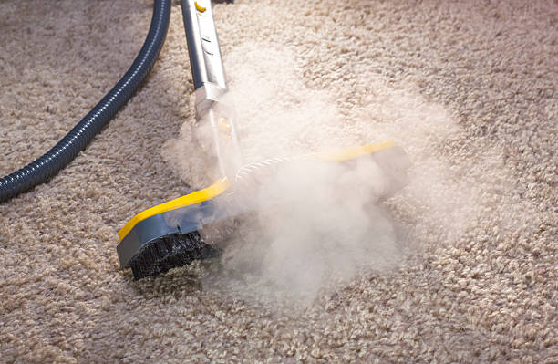
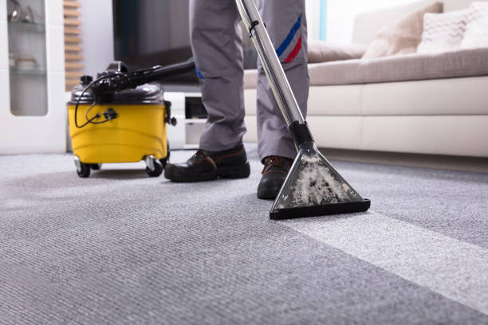
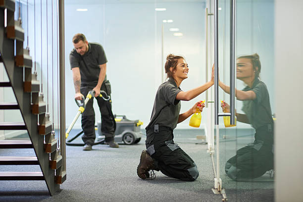

USA - Nationwide
info@usacarpetcleaning.pro
USA - Nationwide
info@usacarpetcleaning.pro

Ensure a fresh start or a proper close with our move-in/move-out carpet cleaning services, making every transition seamless .
Start fresh with our move-in/move-out carpet cleaning services in Usa - Nationwide. We ensure your new home is spotless or your rental is ready for the next tenant, adding value to your transition.
Residential & commercial Carpet Cleaning
Quality services at affordable prices
Immediate 24/ 7 emergency services


In today's world, ensuring your carpets are thoroughly cleaned is not just a matter of aesthetics but also a crucial aspect of maintaining a healthy living environment. At Carpet Cleaning, we specialize in deep carpet cleaning services tailored to the unique needs of our clientele . Our deep cleaning methods penetrate the fibers of your carpet, effectively removing dirt, dust, allergens, and bacteria that regular cleaning cannot touch. Using state-of-the-art equipment, eco-friendly cleaning solutions, and highly trained professionals, we ensure the longevity and beauty of your carpets.
By choosing our deep carpet cleaning service, you are opting for a comprehensive cleaning process that includes pre-treatment of stains, extensive hot water extraction, and professional drying techniques. Not only does this service restore the vibrancy of your carpets, but it also extends their life—making it a smart investment for your home or business.
What sets Carpet Cleaning apart is our commitment to customer satisfaction. We take the time to understand your specific carpet cleaning needs and offer customized solutions. Our attention to detail, punctuality, and thorough communication means you can trust us completely with your carpet care needs .

Eco-friendliness is more than just a trend; it's a lifestyle choice that resonates deeply with many residents and businesses . As environmental awareness increases, so does the demand for sustainable services, including eco-friendly carpet cleaning. Our company is proud to lead the way in providing environmentally conscious carpet cleaning solutions that are safe for both you and the planet.
Our eco-friendly carpet cleaning uses biodegradable detergents and advanced steam cleaning techniques, ensuring that your carpets are treated with care while minimizing environmental impact. The health of your home or office is paramount, and our methods effectively eliminate allergens, bacteria, and odors without leaving harmful residues behind.
Why choose our eco-friendly services? We recognize that many residents in Usa - Nationwide are concerned about the effects of chemicals used in traditional cleaning methods. Our team is dedicated to using safe, effective, and environmentally friendly cleaning agents that not only leave your carpets looking great but also contribute to a healthier indoor environment.
Choose us, and you not only ensure clean carpets but also support sustainable practices that protect our beautiful Usa - Nationwide. Let’s work together toward a healthier future while enjoying beautifully clean carpets.

As pet lovers, we know that furry friends can sometimes leave behind unwanted stains and odors on your carpets. Our Pet Stain and Odor Removal Services are specifically designed to tackle the toughest pet messes. Using advanced techniques and products, we effectively eliminate not only visible stains but also the lingering odors that can affect your home’s air quality. Don't let embarrassing pet odors disrupt your space; trust our team to restore the freshness of your carpets. We understand pet owners’ challenges and are committed to providing specialized solutions that ensure your home remains comforting and clean.

Carpet steam cleaning is one of the most effective methods for achieving a thorough, deep clean. At Carpet Cleaning, we use advanced steam cleaning technology to provide exceptional carpet cleaning services . The combination of high temperature, pressure, and professional-grade machines ensures that your carpets are not just surface cleaned but purged of dirt, allergens, and bacteria.
Our steam cleaning service can rejuvenate even the most soiled carpets. We begin with a pre-inspection to identify problem areas, followed by the application of our special cleaning solution. Our team will then employ steam cleaning machines that deeply penetrate carpet fibers, extracting grime and leaving your carpets thoroughly sanitized. The result is a refreshed and revitalized carpet that enhances the aesthetic appeal of your space.
Why should you choose Carpet Cleaning for carpet steam cleaning? Our experienced team is highly trained, ensuring that every job is done efficiently and effectively. We are committed to providing outstanding customer service and satisfaction, making us the preferred choice for steam cleaning in Usa - Nationwide.

For an exquisite clean, consider our Carpet Shampooing Services . This method is particularly effective for high-traffic areas where dirt and grime accumulate over time. Our carpet shampoos penetrate deep into the fibers, loosening dirt and debris for easy extraction. Combined with our advanced equipment and knowledgeable staff, we ensure your carpets are left immaculate and revitalized. Shampooing not only promotes a clean appearance but also extends the life of your carpets, making it an ideal choice for homes and businesses alike. Trust us to bring back the vibrancy and freshness of your carpets.

Carpets can be a significant source of indoor allergens such as dust mites, pet dander, and pollen. If you or your family are struggling with allergies, investing in professional allergen removal from your carpets is essential. At Carpet Cleaning, we provide specialized allergen removal services targeted specifically towards enhancing the air quality of your home or office .
Our cleaning methods focus not just on surface dirt but also on deeply embedded allergens within your carpet fibers. We utilize state-of-the-art HEPA filtration technology to ensure that allergens are effectively trapped and removed from your living or working environment. Additionally, our team is trained to identify allergen hotspots and apply targeted treatments accordingly.
By choosing Carpet Cleaning for allergen removal, you are taking a proactive step towards better health and comfort. Our dedication to quality service and customer satisfaction makes us the number one choice for allergen-free carpets.

Every home and business experiences unexpected spills and stains. At Carpet Cleaning, we understand that prompt and effective spot and stain treatment can prevent lasting damage and unsightly blemishes on your carpets. Our expert team in Usa - Nationwide is well-versed in identifying and treating various types of stains, from wine and coffee to grease and ink.
Our spot and stain treatment process employs advanced cleaning techniques and specialized solutions that are safe for your carpets yet tough on stains. We conduct a pre-treatment analysis to determine the best course of action for each specific stain, ensuring a tailored approach that delivers optimal results. We then apply the appropriate cleaning solution, agitate the area gently, and extract the stain effectively.
With Carpet Cleaning, you can rest assured that your carpets will look their best again. Our commitment to detail and customer satisfaction makes us the leading choice for spot and stain treatment in Usa - Nationwide—put your carpet worries in our hands.

Wall-to-wall carpets require specialized cleaning techniques due to their size and complexity. At Carpet Cleaning, we offer complete wall-to-wall carpet cleaning services that cover every inch of your flooring. Our professional team is trained in the latest cleaning technologies, ensuring thorough dirt and stain removal. We use methods that not only clean but also refresh your carpets, extending their lifespan and enhancing your indoor aesthetics. Whether it’s a residential property or a commercial space, our commitment to quality service makes us the top choice for wall-to-wall carpet cleaning. Trust us to leave your carpets looking impeccable.

Apartments may have unique challenges when it comes to carpet maintenance, including limited spaces and varying carpet types. Our Apartment Carpet Cleaning Services are tailored to meet the needs of apartment dwellers. We use efficient techniques that allow us to work effectively in tight spaces without compromising on quality. Our team is trained to handle a variety of carpets and stains specific to apartment living. We prioritize your satisfaction and convenience by providing flexible scheduling and high-quality results. Let us help you keep your living space comfortable and inviting.

High-traffic areas in your home or business can quickly show wear and tear. Our high-traffic area carpet restoration service is designed to rejuvenate carpets that have seen better days. We specialize in techniques that target heavy soils and traffic patterns, ensuring that your carpets look their best no matter how busy your space gets. Our restoration process includes thorough cleaning and, if necessary, repair services that can extend the life of your carpets significantly. Trust Carpet Cleaning for expert care in high-traffic zones, as we understand that maintaining appearance is essential for both aesthetics and property value.

Maintaining a clean and professional environment in your office is crucial for making positive impressions on clients and providing a healthy space for employees. Carpet Cleaning offers specialized office carpet cleaning services tailored to meet the unique needs of businesses .
Our team understands that office carpets endure significant foot traffic and require meticulous cleaning. Our comprehensive cleaning service includes spot cleaning, deep extraction wash, and the application of protective treatments to ensure your carpets remain clean and pristine for as long as possible. We work quickly and efficiently, respecting your business hours while ensuring minimal disruption to your workday.
By selecting Carpet Cleaning for your office carpet cleaning needs, you are partnering with a company that values professionalism, efficiency, and exceptional results. Our focus on customer satisfaction and commitment to providing the best carpet care in Usa - Nationwide ensures that your office will continue to impress.

The hospitality industry is built on first impressions, and clean carpets are essential to that experience. At Carpet Cleaning, we specialize in carpet cleaning services tailored for hotels and other hospitality venues . We understand the unique demands of the hospitality sector, where quality and efficiency are paramount. Our skilled team is equipped to handle the high volume of traffic that hotels experience while ensuring that cleanliness standards exceed expectations. We use advanced techniques and products that are tough on stains and gentle on carpets, ensuring a luxury experience for your guests. Trust us to revitalize your hotel carpets, enhancing both ambiance and guest satisfaction.

In retail environments, clean and inviting spaces can drive customer satisfaction and sales. Our retail store carpet maintenance service in Usa - Nationwide is crafted to provide ongoing care for high-traffic retail spaces. We understand that spills and stains can happen at any time, and our rapid response team is always ready to address issues promptly. Our maintenance solutions include regular cleaning schedules tailored to your business needs, ensuring that your carpets always look pristine. By choosing Carpet Cleaning, you ensure a welcoming atmosphere for your customers and a professional appearance for your brand.

Restaurants face unique challenges when it comes to maintaining cleanliness, especially in high-traffic carpeted areas. At Carpet Cleaning, we specialize in restaurant carpet cleaning services in Usa - Nationwide, ensuring that your dining environment remains clean, inviting, and free from unpleasant odors.
Our cleaning process is efficient and thorough, addressing spots, stains, and deep-down dirt effectively. We understand the need for quick turnaround times in the restaurant industry, and our professional team will work diligently to ensure your carpets are cleaned with minimal disruption to your service. We also use high-quality, food-safe cleaning products that are safe for your patrons while effectively removing grease, food residues, and stains.
When you partner with Carpet Cleaning for your restaurant carpet cleaning needs, you can trust that we will maintain the high standards necessary to ensure a welcoming atmosphere for your guests . Our commitment to excellence and customer satisfaction sets us apart in the industry.

Industrial settings present unique challenges for carpet cleaning, including heavy machinery, dust, and dirt. At Carpet Cleaning, we offer industrial carpet cleaning solutions designed to handle these demanding environments. We use heavy-duty cleaning equipment and techniques to ensure that even the toughest grime is removed, leaving your carpets looking their best. Our team is trained to work safely and efficiently in industrial spaces, providing a cleaning service that upholds safety regulations and enhances the overall appearance of your facility. Choose us for industrial carpet cleaning that meets and exceeds your expectations.

Event venues host countless gatherings, and the cleanliness of your carpets can significantly impact the visitor experience. Our Event Venue Carpet Cleaning Services in Usa - Nationwide are designed with the demands of high-traffic events in mind. We offer thorough cleaning before and after events, ensuring your carpets are pristine for every occasion. Our team is experienced in handling various types of events, from weddings to corporate functions, and we understand the importance of making a great impression. Choose us for reliable service and exceptional results that enhance your venue’s appeal.

Clean carpets in healthcare facilities are paramount to maintaining a safe and hygienic environment. At Carpet Cleaning, we provide specialized healthcare facility carpet cleaning services ensuring that your facility remains compliant with health and safety standards.
Our methods are designed to eliminate dust, allergens, and microbes that can pose a risk to patients and staff alike. We employ EPA-approved cleaning products and high-efficiency particulate air (HEPA) filtration systems to thoroughly clean carpets while reducing chemical exposure. Our team is trained in handling the unique challenges of cleaning carpets in medical offices, hospitals, and clinics.
By choosing Carpet Cleaning for your healthcare carpet cleaning needs, you are ensuring a clean, safe, and welcoming environment for all. Our attention to detail and commitment to excellence makes us the best choice for healthcare facilities.

Maintaining cleanliness in schools and daycares is critical for the health and safety of children. Our School and Daycare Carpet Maintenance Services focus on providing a safe, clean environment for learning and play. We understand that children are prone to spills and messes, which is why we offer specialized cleaning techniques to remove stains and allergens effectively. Our friendly team is experienced in working around children, and we prioritize the use of non-toxic cleaning products to ensure safety. From classrooms to common areas, count on us to keep your carpets clean, fresh, and safe.

Carpet protection treatments are a wise investment for extending the life of your carpets and maintaining their aesthetic appeal. At Carpet Cleaning, we offer professional carpet protection treatments, including Scotchgard application, to residents and businesses in Usa - Nationwide.
Our Scotchgard treatment forms an effective barrier against stains and spills, making it easier to clean up accidents before they have a lasting impact on your carpets. Applying this protection after cleaning helps keep carpets looking fresh and new for an extended period. Our trained technicians are skilled at applying these protective treatments safely and effectively to ensure maximum coverage and durability.
By choosing Carpet Cleaning for carpet protection treatments, you’re choosing to prolong the life of your carpets and maintain their beauty . Our commitment to quality and customer satisfaction ensures that you will enjoy a cleaner and more protected carpet.

Mold and mildew growth in carpets can present serious health risks and should be addressed immediately. At Carpet Cleaning, we specialize in carpet mold and mildew removal services throughout Usa - Nationwide. Our expert technicians are trained to recognize the signs of mold and apply effective treatment solutions to eliminate it.
We utilize advanced cleaning methods and equipment to penetrate deep into the fibers of the carpet, removing mold spores and preventing further growth. Additionally, we address any moisture issues that may have contributed to the problem, ensuring a comprehensive approach to mold and mildew remediation.
When you choose Carpet Cleaning for mold and mildew removal, you're taking an essential step towards ensuring a safe and healthy living or working environment. Our focus on quality service and customer satisfaction makes us a trusted partner for carpet care in Usa - Nationwide.

If you require a quick and effective carpet cleaning solution, our carpet dry cleaning services are an excellent option. At Carpet Cleaning, we offer dry cleaning services in Usa - Nationwide that involve minimal wetness and rapid drying times, ideal for residences and businesses that cannot afford downtime.
Our dry cleaning method uses specialized solvents and techniques to dissolve dirt and stains without soaking your carpets in water. We take care to ensure that no residue is left behind, and many carpets can be walked on shortly after the service is completed.
Choosing Carpet Cleaning means that you will receive exceptional service with fast results. Our team is dedicated to providing you with a cleaner, fresher carpet without the need for long drying times. Experience the convenience and effectiveness of our dry cleaning services in Usa - Nationwide.

Water damage can wreak havoc on carpets, leading to mold growth, unpleasant odors, and irreversible damage if not addressed promptly. At Carpet Cleaning, we specialize in carpet water damage restoration services across Usa - Nationwide, offering immediate assistance and effective solutions to restore your carpets to their pre-damage condition.
Our water damage restoration process begins with a thorough assessment of the affected areas. We employ high-powered water extraction techniques and specialized drying equipment to remove moisture from carpets and padding. Our team will also treat affected areas to prevent mold and mildew development, ensuring that your carpets are clean, dry, and safe.
When you choose Carpet Cleaning for water damage restoration, you are making the right choice for fast, effective recovery from unexpected water damage. We are committed to helping you get your space back to normal as soon as possible .

Oriental and area rugs require special care, and our Oriental and Area Rug Cleaning Services in Usa - Nationwide are specifically designed to treat these valuable items with the respect they deserve. Our expert technicians are trained in the delicate cleaning processes necessary to preserve the color, texture, and integrity of your rugs. We use gentle, effective methods tailored to the unique materials and designs present in your rugs, ensuring a thorough clean that enhances their beauty. Trust us to restore your treasured rugs and keep them looking stunning for years to come.

When it comes to luxury carpets, quality care is essential to maintain their elegance and longevity. At Carpet Cleaning, we specialize in luxury carpet care services for discerning homeowners . Our expert team understands that your carpets are not just functional but serve as a focal point of your home’s design.
We offer tailored cleaning and maintenance solutions that match the unique needs of your luxury carpets. Utilizing the latest equipment and eco-friendly, high-quality cleaning solutions, we ensure that your carpets are cleaned to perfection. From deep cleaning to specialized stain treatment, our goal is to preserve the pristine condition of your luxury carpets.
With Carpet Cleaning, you can expect attentive service, expert craftsmanship, and an unwavering commitment to customer satisfaction. Let us help you maintain the beauty and luxury of your high-end carpets in Usa - Nationwide.
USA - Nationwide Carpet Cleaning Pros
(877) 848-1711
info@usacarpetcleaning.pro
09.00 AM - 09.00 PM
09.00 AM - 12.00 PM